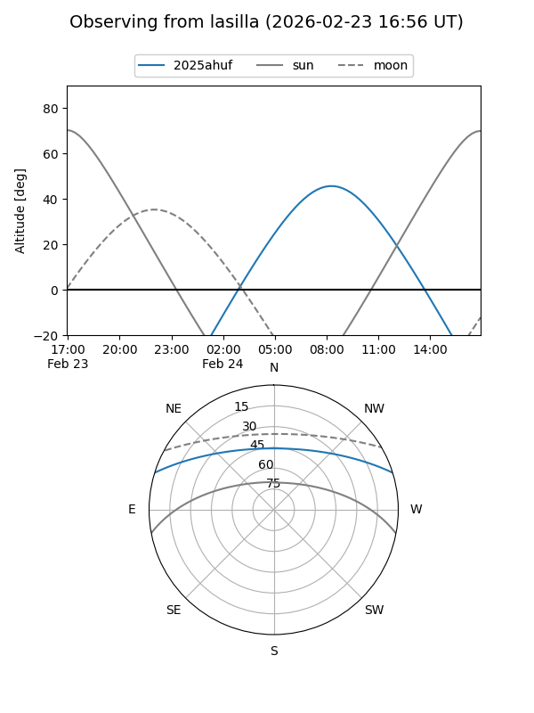
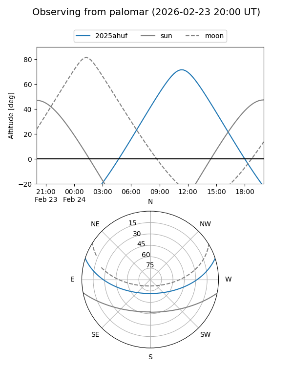
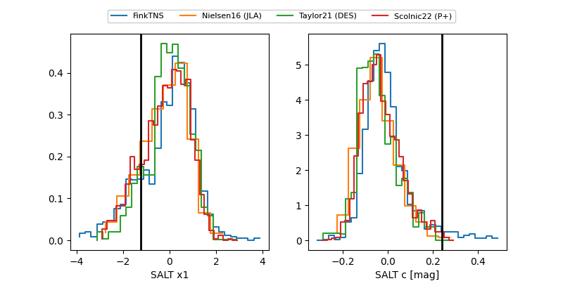

2025ahuf
Target 2025ahuf at 2025-12-31 13:43
Aliases and brokers:
FINK:
Lasair:
ALeRCE:
TNS:
YSE:
alt names
ZTF25acjdzdq (ztf,fink_ztf)
2025ahuf (tns,yse)
Coordinates:
equatorial (ra, dec) = 207.4554,+15.15771
equatorial (HMS+DMS) = 13:49:49.29,+15:09:27.75
galactic (l, b) = (354.4711,+71.90285)
Flags:
Photometry:
last ztfg=18.97, ztfr=18.79
2 ztfg, 1 ztfr detections
Lightcurve

Visibility


Additional plots
